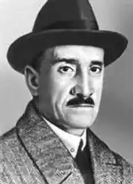
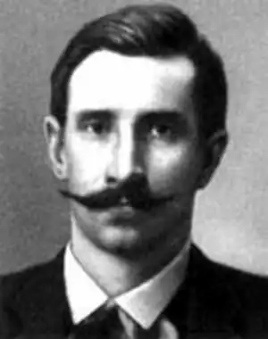
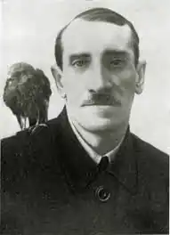

(1880 — 1932)
російський письменник
Грін (наст. Прізвище Гриневський) народився 23 серпня (за старим стилем — 11 серпня) 1880 року в Слобідському, повітовому містечку Вятської губернії, в сім'ї "вічного поселенця" — засланця поляка-повстанця, засланого 16-річним юнаком у Сибір за участь в польському повстанні 1863 і службовця конторщиком на пивоварному заводі. Мати — російська; померла, коли Гріну було 13 років. Незабаром після народження сина сім'я Гриневський переїхала до Вятки. "Я не знав нормального дитинства, — писав Грін у своїй" Автобіографічній повісті ", — мене в хвилини роздратування, за свавілля і невдале вчення, звали" свинопасом "," босяка ", пророкували мені життя, повну плазування у людей щасливих, успішних" . Пояснюючи походження свого літературного псевдоніма, Грін говорив, що "Грін!" — так коротко гукали хлопці Гріневського в школі, а "Грін-млинець" — була одна з його дитячих кличок. Влітку 1896 року, після закінчення чотирикласного Вятського міського училища, Грін поїхав в Одесу, захопивши з собою лише вербову кошик зі зміною білизни та акварельні фарби. В Одесу він потрапив з шістьма рублями в кишені. Худенький, узкоплечий, він гартував себе самими варварськими засобами, навчався плавати за хвилерізом, де тонули і досвідчені плавці. Голодний, обірваний, в пошуках "вакансії" він обходив усі виклики, які в гавані шхуни. У першому плаванні, на транспортному судні "Платон" він вперше побачив берега Кавказу і Криму. Матросом Грін плавав недовго, — після першого або другого рейсу його зазвичай списували за непокірну вдачу. Пізніше був лісорубом і золотошукачів на Уралі. Навесні 1902 юнак опинився в Пензі, в царській казармі. З казенного опису його зовнішності тієї пори: зростання — 177,4, очі — світло-карі, волосся — світло-русяве; особливі прикмети: на грудях татуювання, що зображає шхуну з бушпритом і фок-щоглою, що несе два вітрила. Шукач чудесного, марить морем і вітрилами, потрапляє в 213-й Оровайскій резервний піхотний батальйон, де панували найжорстокіші звичаї, згодом описані Гріном в оповіданнях "Заслуга рядового Пантелєєва" і "Історія одного вбивства". Через чотири місяці "рядовий Олександр Степанович Гриневський" біжить з батальйону, кілька днів ховається в лісі, але його ловлять і засуджують до тритижневого строгого арешту "на хлібі і воді". Пензенські есери допомагають йому втекти з батальйону вдруге, забезпечивши фальшивим паспортом і переправляють до Києва. Звідти він перебрався до Одеси, а потім до Севастополя. За пропагандистську діяльність в Севастополі він поплатився в'язницею і засланням. Після звільнення з севастопольського каземату Грін їде в Петербург і там незабаром знову потрапляє до в'язниці. Гріна засилають на 4 роки в г.Турінск, Тобольської губернії. Після прибуття туди "етапним порядком" Грін біжить із заслання і добирається до Вятки. Батько дістає йому паспорт недавно померлого в лікарні "особистого почесного громадянина" А.А. Мальгінова і Грін повертається до Петербурга, щоб через кілька років, в 1910 році, знову відправитися на заслання, на цей раз в Архангельську губернію. Тюрми, заслання, вічна нужда ... Недарма говорив Грін, що його життєвий шлях був усипаний НЕ трояндами, а цвяхами ... У Петербург повернувся в травні 1912. Влившись в петербурзькі літературні кола, співпрацював у багатьох журналах. У 1916 в Петрограді почав писати "повість-феєрію" "Червоні вітрила". З кінця 1916 змушений був переховуватися в Фінляндії, але, дізнавшись Лютневої революції, повернувся в Петроград. У 1919, з Петрограда був призваний в Червону армію, де служив зв'язківцем. У 1920 тяжкохворого Гріна, який захворів на висипний тиф, привезли в Петроград, де за допомогою М.Горького йому вдалося отримати академічний пайок і кімнату в "Будинку мистецтв". Батько розраховував, що з його старшого сина, в якому вчителі бачили завидні здатності, вийде неодмінно інженер або доктор, потім він погоджувався вже на чиновника, на худий кінець, на писаря, жив би тільки "як всі", кинув би "фантазії". .. Перше оповідання "Заслуга рядового Пантелєєва" (агітброшюра за підписом А.С.Г. була написана в 1906) був конфіскований і спалений охранкою. Перші публікації (розповіді) були в 1906, в Петербурзі. Підпис "А.С. Грін" вперше з'явилася в 1908 під розповіддю "Апельсини" (за іншими відомостями — під розповіддю "Випадок" в 1907). У 1908 вийшла перша збірка "Шапка-невидимка" з підзаголовком "Розповіді про революціонерів". Не тільки в юності, але і в пору широкої популярності Грін, поряд з прозою, писав ліричні вірші, віршовані фейлетони і навіть байки. Закінчивши роман "Блискучий світ", навесні 1923 року Грін їде в Крим, до моря, бродить по знайомих місцях, живе в Севастополі, Балаклаві, Ялті, а в травні 1924 року поселяється в Феодосії — "місті акварельних тонів". У листопаді 1930 року, вже хворий, він переїжджає в Старий Крим. Помер Грін 8 липня 1932 року в Феодосії. У 1970 в Феодосії був створений літературно-меморіальний музей Олександра Гріна.